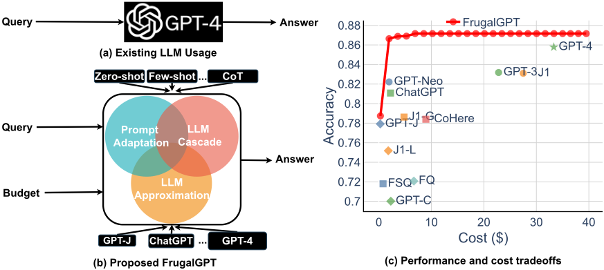
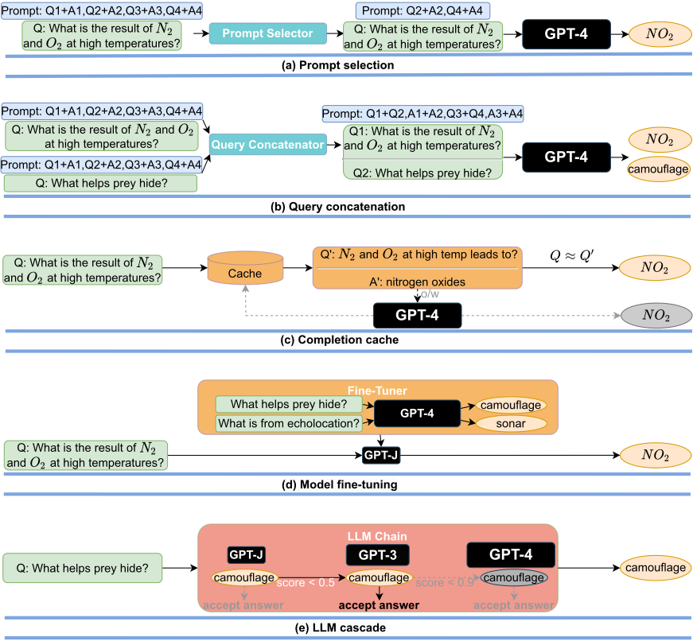
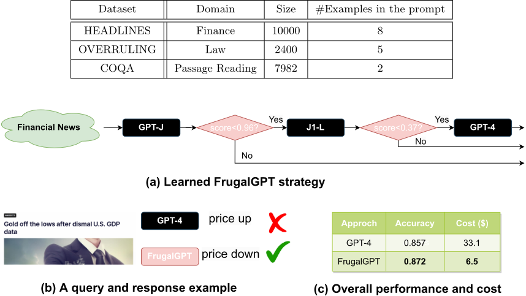
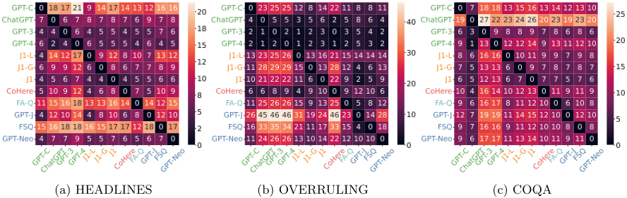
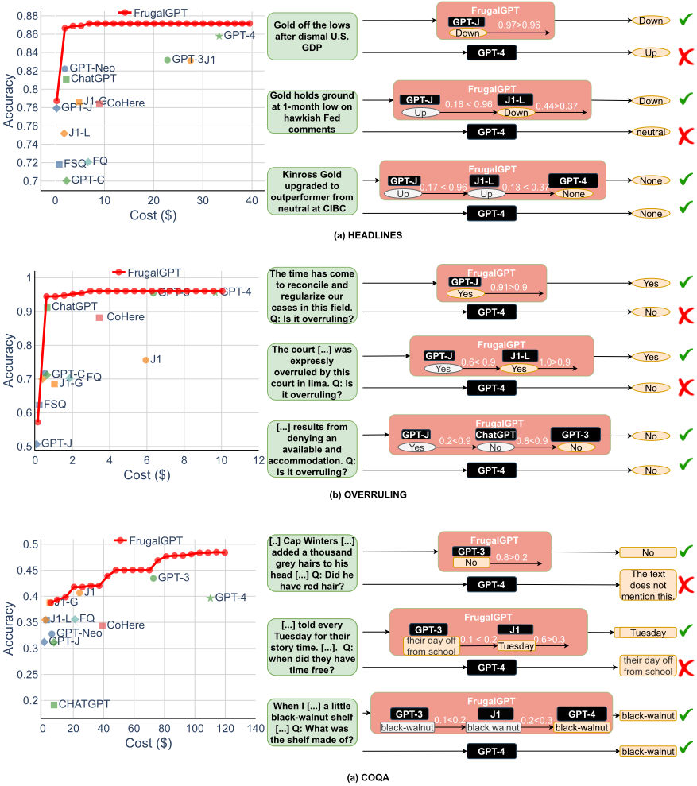

FrugalGPT：如何在使用大语言模型（LLM）的同时降低成本并提升性能
商业 LLM API 定价结构差异巨大，成本可相差两个数量级，高吞吐场景下直接调用 GPT-4 等最强模型开销高昂（论文估算客服场景月成本可达约 2.1 万美元）。论文研究预算约束下的 LLM 使用问题，提出三类降本策略：prompt adaptation（精简提示、查询拼接）、LLM approximation（completion cache、用昂贵模型输出微调便宜模型）和 LLM cascade（按查询难度逐级调用不同模型），并实现 FrugalGPT：用 DistilBERT 回归模型对"查询+答案"打可靠性分，逐级调用 GPT-J→J1-L→GPT-4，分数达标即提前返回，否则升级到更贵的模型。在 HEADLINES、OVERRULING、COQA 三个数据集上，FrugalGPT 匹配 GPT-4 性能时最高节省 98% 成本，同成本下准确率最高提升 4%。对团队而言，这是"用好 LLM"视角下成本优化的奠基性框架，其级联路由、响应缓存与提示精简思路可直接用于控制自动化流水线的 API 开销。
商业 LLM API 定价异构（输入 token、输出 token、按次固定费三部分构成），不同模型成本可相差两个数量级，大规模使用 GPT-4 等模型财务与环境成本都很高；且依赖单一 API 供应商存在可用性风险。论文要解决的问题是 budget-aware LLM API usage：在用户定义的平均成本预算 b 约束下，通过选择提示、选择 LLM API 及聚合响应的策略，最大化自然语言问答任务的整体性能。
提出三类降本策略并重点实现第三类。(1) prompt adaptation：prompt selection（只保留少量 in-context 示例以缩短提示）与 query concatenation（将多个查询拼接进一次调用，共享同一份提示，避免重复发送）。(2) LLM approximation：completion cache（本地缓存 LLM 响应，相似查询直接命中缓存，未命中才调用 API）与 model fine-tuning（收集昂贵 LLM 的响应微调更便宜的小模型，还附带缩短提示、降低延迟的收益）。(3) LLM cascade：按顺序调用一列 LLM API，核心组件为 generation scoring function（对查询与生成答案打 0~1 可靠性分，实验中用 DistilBERT 回归模型实现）与 LLM router（选择进入级联的模型列表 L）；分数超过阈值 τ_i 即返回答案，否则调用下一个更贵的模型。L 与 τ 通过带预算约束的混合整数优化学习，作者用"剪枝答案分歧小的模型列表 + 少量样本插值目标函数"的专用优化器加速求解。FrugalGPT 是 LLM cascade 的实例，实验中级联长度固定为 3，各策略还可组合（如联合提示与模型选择）。
FrugalGPT 匹配最佳单模型（如 GPT-4）性能时，推理成本最高降低 98%；Table 3 显示各数据集上为匹配最佳单模型性能的成本节省范围为 50%–98%
相同成本下，FrugalGPT 准确率比 GPT-4 最高提升 4%（摘要数据；正文图 5 标注最高可达 5%）
HEADLINES 案例研究（预算 $6.5，为 GPT-4 成本的 1/5；级联为 GPT-J→J1-L→GPT-4，接受阈值分别为 0.96 与 0.37）：成本降低 80%，准确率反而提高 1.5%
OVERRULING 数据集上，相比最佳单模型 GPT-4，准确率提升 1% 的同时成本降低 73%
LLM 多样性（MPI 指标）：HEADLINES 上约 6% 的样本 GPT-4 答错但 GPT-J/J1-L/GPT-C 答对；COQA 上 13% 的数据点 GPT-4 答错但 GPT-3 答对
12 个商业 LLM API 的成本可相差最多 2 个数量级（处理 10M 输入 token：GPT-4 需 $30，Textsynth 托管的 GPT-J 仅 $0.2）；且成本排序不固定、更贵的模型有时表现更差
相对已有工作的区别：(1) 相比 model ensemble 需要白盒访问多个模型、且对每个查询都要调用所有模型（反而增加成本），FrugalGPT 面向黑盒商业 API 且按需逐级调用；(2) 相比 system optimization（量化、剪枝、流水线并行等）需要修改模型内部状态，本方法完全不触碰模型权重，适用于不开放权重的商业 API；(3) 相比 model cascade 与 FrugalML 等面向固定已知标签集的分类任务的方法，本方法处理输出为整个自然语言空间的生成式问答任务，且同时优化提示选择与 API 选择，搜索空间大得多；(4) 与追求更长更详细提示的主流 prompt engineering 方向相反，探索用更精简的提示降低成本。
相关度级别：high
命中能力域：3.5 评测与可靠使用 | 3.2 提示工程 | 3.1 上下文工程与记忆
理由：直接命中 3.5 中的"成本与效率优化"：论文整个主题就是在预算约束下高效、可靠地使用 LLM API，这正是团队构建工程自动化工具与研发提效流程时必须面对的 API 开销与产出质量问题；其 generation scoring function 还给出一种用小模型评估 LLM 输出可靠性、作为质量门控的可落地做法。次要命中 3.2：prompt selection（自动选择保留哪些 in-context 示例）与 query concatenation 属于提示技术与 in-context learning 的成本导向变体，与主流"更长提示"路线形成互补视角。次要命中 3.1：精简提示本质是上下文压缩，completion cache 是生产系统中响应/上下文复用的一种记忆机制。级联路由虽不涉及 Agent loop 与工具调用，但可作为多模型调度与执行可靠性设计的基础模式借鉴。
建议动作：深入精读并做内部分享
arXiv:2305.05176v1 [cs.LG] 2023年5月9日
FrugalGPT：如何在降低成本并提升性能的同时使用大语言模型
Lingjiao Chen, Matei Zaharia, James Zou
斯坦福大学
可供付费查询的大语言模型（LLM）数量正在迅速增长。我们回顾了查询流行的 LLM API（例如 GPT-4、ChatGPT、J1-Jumbo）的相关成本，发现这些模型具有异构的定价结构，费用可相差两个数量级。特别是在大量查询和文本上使用 LLM 可能成本高昂。基于此，我们概述并讨论了用户可用来降低使用 LLM 相关推理成本的三类策略：1）提示适配（prompt adaptation），2）LLM 近似（LLM approximation），以及 3）LLM 级联（LLM cascade）。作为示例，我们提出了 FrugalGPT，它是 LLM 级联的一种简单而灵活的实例化，可学习针对不同查询应使用哪些 LLM 组合，从而降低成本并提高准确率。我们的实验表明，FrugalGPT 能够在成本降低高达 98% 的情况下匹配最佳单个 LLM（例如 GPT-4）的性能，或者在相同成本下将准确率比 GPT-4 提高 4%。本文提出的思路和发现为可持续且高效地使用 LLM 奠定了基础。
我们正处于大型语言模型（LLM）爆发式发展的浪潮之中。将 LLM 用于商业、科学和金融等大规模应用的诱人前景，促使越来越多的公司（OpenAI、AI21、CoHere 等）以服务的形式提供 LLM。
尽管 GPT-4 等 LLM 在问答等任务中取得了前所未有的性能，但将其用于高吞吐量应用可能非常昂贵。例如，据估计 ChatGPT 每天的运营成本超过 700,000 美元 [Cosa]，而一家小型企业使用 GPT-4 支持客户服务，每月成本可能超过 21,000 美元 [Cosb]。除了经济成本之外，使用最大的 LLM 还会造成巨大的环境和能源影响 [BGMMS21, WRG + 22]，影响当代和未来世代的社会福利。
目前已有许多 LLM 可通过 API 获取，且它们的定价各不相同。使用 LLM API 的成本通常由三部分组成：1）提示成本（与提示长度成正比）；2）生成成本（与生成长度成正比）；3）有时还包括每次查询的固定成本。我们比较了来自 OpenAI、AI21、CoHere 和 Textsynth 等主流提供商的 12 种不同商用 LLM 的使用成本（表 1）。它们的成本差异可达 2 个数量级：例如，对于 1000 万个 token，OpenAI 的 GPT-4 的提示成本为 30 美元，而由 Textsynth 托管的 GPT-J 仅为 0.2 美元。
鉴于成本和质量的异构性，如何有效且高效地利用全部 LLM 选项是从业者面临的一项关键挑战。如果任务相对简单，那么聚合来自 GPT-J [WK21]（其规模比 GPT-3 小 30 倍）的多个响应可以获得与 GPT-3 相似的性能 [ANC + 22]，从而节省资金并减少环境负担。然而，GPT-J 在困难任务上的性能可能差得多 [TLI + 23]。此外，依赖单一的 API 提供商并不可靠，因为该提供商可能因需求激增等原因而变得不可用。现有的模型集成范式，如模型级联（model cascade）[VJ04, WLM11] 和 FrugalML [CZZ20, CZZ22]，是为具有已知标签集合的预测任务设计的，并未考虑 LLM 的全部能力。因此，如何经济且准确地使用 LLM 需要新的方法。
我们的贡献。在本文中，我们阐述了一个灵活框架的愿景：在预算约束下使用 LLM API 处理自然语言查询，我们将其称为 FrugalGPT。如图

1 所示，我们讨论了三种主要的降本策略：提示适配（prompt adaptation）、LLM 近似（LLM approximation）和 LLM 级联（LLM cascade）。提示适配探索如何识别有效（通常更短）的提示以节省成本。LLM 近似旨在构建更简单、更廉价的 LLM，使其在特定任务上能够匹敌强大而昂贵的 LLM。LLM 级联则专注于如何自适应地选择针对不同查询应使用哪些 LLM API。
为了展示这些思路的潜力，我们实现并评估了一个基于 LLM 级联的 FrugalGPT 简化版本。在每个数据集和任务上，FrugalGPT 学习如何将数据集中的不同查询自适应地分流到不同的 LLM 组合，包括 ChatGPT [Cha]、GPT-3 [BMR + 20] 和 GPT-4 [Ope23]。我们的实验表明，FrugalGPT 能够在匹配最佳单个 LLM API 在下游任务上性能的同时，节省高达 98% 的推理成本。另一方面，在相同成本下，FrugalGPT 可以将性能提升高达 4%。我们相信这仅仅是冰山一角，我们希望 FrugalGPT 能够为降低 LLM 的推理成本并提升其性能打开一扇新的窗口。
相关工作。提示工程。提示工程（prompt engineering）已成为一门通过精心设计提示来提升 LLM 在各类应用中性能的学科。近期的发展包括少样本（few-shot）提示 [BMR + 20]、思维链（chain-of-thought，CoT）[WWS + 22]、知识增强 [LLL + 21, KSL + 22] 以及众多其他提示技术 [MDL + 23, KTF + 22, ZSH + 22, DGSG22]。现有的提示工程方法通常旨在提供更详细的任务说明和上下文示例，从而导致提示更长、成本更高。相比之下，本文探索使用简洁的提示来降低成本。
模型集成。模型集成（model ensemble）通过组合多个机器学习（ML）模型来进行预测，其在监督学习 [VJ04, Fri02]、无监督学习 [YLLL14]、半监督学习 [GDMR22] 和弱监督学习 [DSP + 17] 中已日益流行。模型集成通常需要以白盒方式访问多个模型以用于训练，但 LLM API 往往是黑盒的。此外，模型集成要求针对单个查询对所有模型进行查询，从而增加了成本。
面向 LLM 的系统优化。许多研究工作致力于通过系统优化来加速现代深度学习模型的训练和推理时间 [HMD15, CHSV17, Cas19, JZA19, RRWN11]。近期的工作聚焦于专为 LLM 设计的训练后量化 [BHS + 22, YLW + 23, XLS + 22]、训练流水线并行 [LZG + 21] 以及硬件感知剪枝 [KFA23]。系统优化需要对 LLM 的内部状态（例如模型权重）进行修改，但许多商业 LLM API 并不公开其模型。此外，LLM 规模的快速增长使得重新训练的成本极其高昂。
ML 即服务（ML-as-a-Service）。LLM API 是快速扩张的机器学习即服务（MLaaS）产业的关键组成部分。近期研究已经展示了不同 ML API 预测结果的多样性 [BG18, KNL + 20, CCZZ21]，并提出了利用各种分类 ML API 来提升性能的策略 [CZZ20, CZZ22]。LLM API 的输出涵盖整个自然语言空间，但现有工作需要一个固定（且已知）的标签集合。此外，提示选择和 LLM API 的选择都会显著影响生成式任务的性能，导致其优化空间远大于标准分类。
本文其余部分的组织结构如下。我们首先在第 2 节中提供更多背景信息和问题陈述。接着在第 3 节中，我们阐述关于如何经济且准确地使用 LLM API 的构想。第 4 节展示了 FrugalGPT 使用真实世界 LLM API（包括 GPT-3、ChatGPT 和 GPT-4）所获得的实证收益。最后，我们在第 5 节中讨论未来展望。
自然语言查询问答。本文聚焦于标准的自然语言查询问答任务，其目标是对从自然语言查询分布 Q 中采样得到的查询 q 作出回答。诸如新闻分类、阅读理解和常识推理等多种真实世界的自然语言任务，都可以被表述为查询问答问题。
LLM 市场。我们考虑通过 LLM 市场来回答查询，该市场由 K 个不同的 LLM API 组成，记为 {f_i(·)}_{i=1}^K。每个 f_i(·): P ↦→ A 都是一个函数，给定来自提示空间 P 的提示 p，它会从答案分布 A 中生成一个答案。请注意，要使用 LLM API，必须先将每个查询 q 转换为相应的提示。LLM API 具有各自的成本，通常由三个部分组成：与提示长度成正比的部分、与生成答案长度成正比的部分，以及（有时）针对每个查询的固定成本。形式化地，给定提示 p，使用第 i 个 LLM API 的成本记为 c_i(p) ≜ ˜c_{i,2}‖f_i(p)‖ + ˜c_{i,1}‖p‖ + ˜c_{i,0}，其中 ˜c_{i,j}（j = 0, 1, 2）为常数。
一个示例。改编自 [Cosa] 提供的案例研究：假设一家小型企业使用 GPT-4 运营客户服务。该公司每月服务 15,000 名客户，每位客户每周提问两次、每次提出三个问题，每月总计 360,000 个查询。假设每个问题对应的提示平均长度为 1800 个 token，而答案约为 80 个 token。考虑到 GPT-4 的输入和响应成本分别为每千 token $0.03 和 $0.06，每月总成本为 360 × ($0.03 × 1800 + $0.06 × 80) ≈ $21.2K。如此高昂的成本对许多小型企业而言是难以承受的。
问题陈述：预算感知的 LLM API 使用。本文的首要目标是在预算约束下使用 LLM API。形式化地，这可以表述为：最大化整体任务性能 E_{(q,a)∈Q×A}[r(a, ˆa(s,q))]，同时确保平均成本不超过用户定义的值 b，即 E_{(q,a)∈Q×A}[c(s,q)] ≤ b。其中，a 表示查询 q 的正确答案，ˆa(s,q) 是某种策略 s 针对查询 q 生成的答案，c(s,q) 是使用策略 s 处理查询 q 所产生的相关成本。奖励函数 r(·,·) 衡量生成的答案与正确答案的吻合程度。需要特别注意的是，策略的搜索空间极为庞大，其涵盖的因素包括使用哪些提示、采用哪些 LLM API，以及如何聚合它们的响应。
现在，我们阐述关于如何在预算范围内使用 LLM API 的构想。如图 1 (b) 所示，我们讨论三种降低成本的策略，即提示适配（prompt adaptation）、LLM 近似（LLM approximation）和 LLM 级联（LLM cascade）。

策略 1：提示适配（prompt adaptation）。LLM 查询的成本随提示规模的增大而线性增加。因此，降低使用 LLM API 成本的一个合理途径是减小提示的规模，我们将这一过程称为提示适配。提示选择（prompt selection，如图 2 (a) 所示）是提示适配的一个自然示例：与其使用包含大量示例来演示如何执行某项任务的提示，不如在提示中仅保留一小部分示例。这样可以得到更小的提示，从而降低成本。提示选择的一个有趣挑战在于，如何在不损害任务性能的前提下，针对不同的查询确定应保留哪些示例。
另一种具体实现是查询拼接（query concatenation，图 2 (b)）。需要注意的是，逐条处理查询需要多次向 LLM API 发送相同的提示。因此，查询拼接的基本思想是只向 LLM API 发送一次提示，同时让它处理多个查询，从而避免冗余的提示处理。为实现这一点，必须将若干查询拼接为单个查询，并且提示中必须明确要求 LLM API 处理多个查询。例如，要用一个提示处理两个查询，提示中给出的示例可以同时包含这两个查询及其对应的答案。
策略 2：LLM 近似（LLM approximation）。LLM 近似的概念非常简单：如果某个 LLM API 的使用成本过高，可以用更廉价的模型或基础设施来近似它。一个例子是补全缓存（completion cache）：如图 2 (c) 所示，其基本思想是在向 LLM API 提交查询时，将响应本地存储在缓存（例如数据库）中。在处理新查询时，我们首先检查是否有相似的查询此前已被回答过。如果是，则从缓存中取回响应。只有当缓存中未发现相似查询时，才会调用 LLM API。当相似查询被频繁提出时，补全缓存能带来可观的成本节约。例如，考虑一个由 LLM API 驱动的搜索引擎。如果大量用户同时搜索相同或相似的关键词，补全缓存使得只需调用一次 LLM 即可回答所有这些查询。
LLM 近似的另一个例子是模型微调（model fine-tuning）。如图 2(d) 所示，该过程包含三个步骤：首先，收集某个强大但昂贵的 LLM API 对少量查询的响应；其次，利用这些响应来微调一个更小、更经济实惠的 AI 模型；最后，将微调后的模型用于新的查询。除了节省成本之外，微调后的模型通常不再需要冗长的提示（prompt），从而附带地带来了延迟方面的改进。
策略 3：LLM 级联（LLM cascade）。性能与成本各异的 LLM API 日益普及，为数据自适应的 LLM 选择提供了独特的机会。不同的 LLM API 针对各类查询各有其优势与不足。因此，恰当地选择使用哪些 LLM 能够同时带来成本降低和性能提升。LLM 级联便是这样一个例子，如图 2(e) 所示。LLM 级联将查询依次发送给一个 LLM API 列表。如果某个 LLM API 的响应是可靠的，则返回该响应，且无需使用列表中后续的 LLM。只有当前面各 API 的生成结果被认为可靠性不足时，才会查询其余的 LLM API。如果列表中前几个 API 相对廉价且能生成可靠的结果，查询成本将显著降低。
LLM 级联的关键组件由两个要素构成：(i) 生成评分函数（generation scoring function）和 (ii) LLM 路由器（LLM router）。生成评分函数记为 g(·,·) : Q×A ↦→ [0,1]，在给定一个查询以及某个 LLM API 所产生答案的情况下，生成一个可靠性评分。LLM 路由器选择 m 个 LLM API 纳入列表。令 L ∈ [K]^m 表示路由器所选的 m 个 API 的索引。给定一个新查询时，它迭代地调用列表中的第 i 个 API，以获得答案 f_{L_i}(q)。然后，它使用评分函数生成评分 g(q, f_{L_i}(q))。如果评分高于阈值 τ_i，则返回该生成结果；否则查询下一个服务。
评分函数可以通过训练一个简单的回归模型来获得，该模型根据查询和生成的答案来学习判断某个生成结果是否正确。对所选列表 L 和阈值向量 τ 的学习可以建模为一个约束优化问题：
其中，z 表示路由器停止并返回答案时所对应的 LLM API，第一个约束确保平均成本不超过预算，目标函数则衡量针对查询 q 的生成结果 f_{L_z}(q) 相对于真实答案 a 的质量。该问题本质上是一个混合整数优化问题，因此求解的计算代价很高。为解决这一问题，我们开发了一个专门的优化器，它 (i) 通过忽略任何答案分歧较小的 LLM 列表来对 L 的搜索空间进行剪枝，并 (ii) 通过在少量样本内进行插值来近似目标函数。由此得到一种性能令人满意的高效实现，稍后如图 5 所示。
组合。在同一策略内部以及跨不同策略组合多种方法，可以进一步降低成本并提升性能。例如，提示与 LLM 的联合选择就是提示选择与 LLM 级联的一种组合：对于给定的查询，它会搜索能够取得令人满意的任务性能的最小提示和最经济实惠的 LLM。另一个例子是同时在现有 LLM API 和微调模型中进行搜索。需要注意的是，不同方法的组合也会增加训练的计算成本。因此，这为研究查询成本、任务性能与计算成本三者之间的权衡铺平了道路。
在本节中，我们对 FrugalGPT LLM 级联进行了实证研究。我们的目标有三个：(i) 理解 LLM 级联的简单实例学到了什么，(ii) 量化 FrugalGPT 在匹配最佳单个 LLM API 性能的同时所实现的成本节约，以及 (iii) 衡量 FrugalGPT 所实现的性能与成本之间的权衡。
实验设置：LLM API、任务、数据集与 FrugalGPT 实例。我们从 5 家主流提供商中选取了 12 个 LLM API，即 OpenAI [Ope]、AI21 [AI2]、CoHere [CoH]、Textsynth [Tex] 和 ForeFrontAI [FFA]。详细信息汇总于表 1。FrugalGPT 在这些 API 之上构建，并在属于不同任务的一系列数据集上进行了评估，包括 HEADLINES [SK21]、OVERRULING [ZGA + 21] 和 COQA [RCM19]。这些数据集的概况见表 2。HEADLINES 是一个金融新闻数据集，其目标是通过阅读金融新闻标题来判断金价走势（上涨、下跌、中性或无）。这对于过滤金融市场中的相关新闻尤为有用。OVERRULING 是一个法律文档数据集，其目标是判断给定句子是否属于推翻性判决（overruling），即否定先前的法律判例。COQA 是在对话式场景下开发的阅读理解数据集，我们将其改造为直接问答任务。我们聚焦于级联长度为 3 的 LLM 级联方法，因为这简化了优化空间，且已经展现出良好的效果。每个数据集被随机划分为用于学习 LLM 级联的训练集和用于评估的测试集。
案例研究。让我们从 HEADLINES 数据集上的一个案例研究开始。我们将预算设为 6.5 美元，即 GPT-4 成本的五分之一。我们采用一个针对回归任务定制的 DistilBERT [SDCW19] 作为评分函数。需要注意的是，DistilBERT 比本文考虑的所有 LLM 都小得多，因此成本也更低。如图 3(a) 所示，学习到的 FrugalGPT 依次调用 GPT-J、J1-L 和 GPT-4。对于任何给定的查询，它首先从 GPT-J 提取一个答案。如果该答案的得分大于 0.96，则该答案被接受为最终响应；否则，将查询 J1-L。如果 J1-L 的答案得分大于 0.37，则该答案被接受为最终响应；否则，调用 GPT-4 以获得最终答案。有趣的是，这种方法在许多查询上都优于 GPT-4。例如，对于来自 NASDAQ 的标题"Gold off the lows after dismal U.S. GDP data"，FrugalGPT 准确预测价格将下跌，而 GPT-4
| Provider.Provider | API.API | Size/B.Size/B | Cost (USD).10M input tokens | Cost (USD).10M output tokens | Cost (USD).request |
|---|---|---|---|---|---|
| OpenAI | GPT-Curie | 6.7 | 2 | 2 | 0 |
| OpenAI | ChatGPT | NA | 2 | 2 | 0 |
| OpenAI | GPT-3 | 175 | 20 | 20 | 0 |
| OpenAI | GPT-4 | NA | 30 | 60 | 0 |
| AI21 | J1-Large | 7.5 | 0 | 30 | 0.0003 |
| AI21 | J1-Grande | 17 | 0 | 80 | 0.0008 |
| AI21 | J1-Jumbo | 178 | 0 | 250 | 0.005 |
| Cohere | Xlarge | 52 | 10 | 10 | 0 |
| ForeFrontAI | QA | 16 | 5.8 | 5.8 | 0 |
| Textsynth | GPT-J | 6 | 0.2 | 5 | 0 |
| Textsynth | FAIRSEQ | 13 | 0.6 | 15 | 0 |
| Textsynth | GPT-Neox | 20 | 1.4 | 35 | 0 |
| Provider.Provider | API.API | Size/B.Size/B | Cost (USD).10M input tokens | Cost (USD).10M output tokens | Cost (USD).request |
| Dataset | Domain | Size | #Examples in the prompt |
|---|---|---|---|
| HEADLINES | Finance | 10000 | 8 |
| OVERRULING | Law | 2400 | 5 |
| COQA | Passage Reading | 7982 | 2 |
| Dataset | Domain | Size | #Examples in the prompt |


给出了错误的答案（如图 3(b) 所示）。总体而言，FrugalGPT 同时带来了准确率的提升和成本的降低。如图 3(c) 所示，其成本降低了 80%，而准确率甚至高出 1.5%。
LLM 多样性。为什么多个 LLM API 有可能比最佳的单个 LLM 产生更好的性能？本质上，这是由于生成多样性：即使是一个廉价的 LLM，有时也能正确回答更昂贵的 LLM 无法回答的查询。为了衡量这种多样性，我们使用最大性能提升（maximum performance improvement，MPI）。LLM A 相对于 LLM B 的 MPI 是指 LLM A 生成正确答案而 LLM B 给出错误答案的概率。该指标本质上衡量了在调用 LLM B 之外再调用 LLM A 所能获得的最大性能增益。
所有数据集上每对 LLM API 之间的 MPI 展示在图 4 中。总体而言，我们观察到 LLM 市场中蕴藏着巨大的潜力。例如，在 HEADLINES 数据集上，GPT-C、GPT-J 和 J1-L 都能将 GPT-4 的性能提升高达 6%。在 COQA 数据集上，有 13% 的数据点中 GPT-4 出错，而 GPT-3 给出了正确答案。尽管这些提升上界并不总是能够达到，但它们确实证明了利用更实惠的服务来取得更好性能的可能性。
| Dataset.Dataset | Best invidual LLM.Best invidual LLM | Cost to reach the same accuracy.Best individual LLM | Cost to reach the same accuracy.FrugalGPT | Cost Savings.Cost Savings |
|---|---|---|---|---|
| HEADLINES | GPT-4 | 33.1 | 0.6 | 98.3% |
| OVERULLING | GPT-4 | 9.7 | 2.6 | 73.3% |
| COQA | GPT-3 | 72.5 | 29.6 | 59.2% |
| Dataset.Dataset | Best invidual LLM.Best invidual LLM | Cost to reach the same accuracy.Best individual LLM | Cost to reach the same accuracy.FrugalGPT | Cost Savings.Cost Savings |
成本节省。接下来，我们考察 FrugalGPT 能否在保持准确率的同时降低成本，如果可以，能降低多少。表 3 展示了 FrugalGPT 的总体成本节省情况，范围从 50% 到 98%。这之所以可行，是因为 FrugalGPT 识别出那些可以由更小的 LLM 准确回答的查询，从而只调用那些高性价比的 LLM。强大而昂贵的 LLM（如 GPT-4）仅用于 FrugalGPT 检测到的具有挑战性的查询。
性能与成本的权衡。现在，我们研究 FrugalGPT 所实现的性能与成本之间的权衡，如图 5 所示。可以得出几个有趣的观察结果。

首先，不同 LLM API 的成本排名并非固定不变。例如，在 HEADLINES 数据集上，J1 是第二昂贵的 LLM，而在 OVERRULING 和 COQA 数据集上，这一位置由 GPT-3 占据。这主要是由于异构的定价机制：J1 对每个生成的 token 收取高额费用，但对输入 token 不收费，而 GPT-3 对输入和输出 token 都收费。此外，更昂贵的 LLM API 有时反而会比更便宜的同类产品表现更差。例如，在 HEADLINES 上，J1 比 GPT-3 更昂贵，但其性能却更差。这些观察结果凸显了恰当选择 LLM API 的重要性，即使在没有预算约束的情况下也是如此。
接下来，我们注意到 FrugalGPT 能够在所有评估数据集上实现平滑的性能-成本权衡。这为 LLM 用户提供了灵活的选择，并有望帮助 LLM API 提供商节省能源、减少碳排放。事实上，FrugalGPT 能够同时降低成本并提升准确率。例如，在 OVERRULING 数据集上，与最佳 LLM API GPT-4 相比，FrugalGPT 在将成本降低 73% 的同时取得了 1% 的准确率提升。这很可能是因为 FrugalGPT 整合了来自多个 LLM 的知识。
图 5 所示的示例查询进一步有助于理解 FrugalGPT 为何能够同时提升性能并降低成本。GPT-4 在某些查询上会犯错（例如 (a) 部分中的第一个示例），而一些低成本的 API 却能给出正确的预测。FrugalGPT 能够准确识别这些查询，并仅依赖廉价的 API。例如，如图 5(b) 所示，对于法律陈述 'The time has come to reconcile and regularize our cases in this field'，GPT-4 错误地推断出不存在推翻（no overruling）。然而，FrugalGPT 采纳了 GPT-J 的正确答案，避免使用昂贵的 LLM，从而提升了整体性能。自然地，单个 LLM API 并非总是正确；LLM 级联通过采用一条 LLM API 链来克服这一问题。例如，在图 5(a) 所示的第二个示例中，FrugalGPT 判断 GPT-J 的生成结果可能不可靠，于是转而求助于级联中的第二个 LLM——J1-L——来寻找正确答案。同样，GPT-4 给出了错误的答案。FrugalGPT 并不完美，在降低成本方面仍有充足的空间。例如，在图 5(c) 的第三个示例中，级联中的所有 LLM API 都给出了相同的答案。然而，FrugalGPT 无法确定前面的 LLM 是否正确，因而需要查询级联中的所有 LLM。如何避免此类情况仍是一个开放问题。
在真实场景中使用大语言模型（LLM）的高昂成本，对其广泛使用构成了相当大的障碍。本文概述并讨论了降低 LLM API 推理成本的实用策略。我们还开发了 FrugalGPT，以展示其中一种节省成本的策略——LLM 级联。我们的实证结果表明，FrugalGPT 能够在保持前沿 LLM 性能的同时，将成本降低多达 98%。
FrugalGPT 为在预算约束下利用 LLM API 优化任务性能奠定了基础；然而，它也存在一些局限性。为了训练 FrugalGPT 中的 LLM 级联策略，我们需要一些带标注的样本。而且，为了使级联良好运作，训练样本应与测试样本来自相同或相似的分布。此外，学习 LLM 级联本身也需要消耗资源。我们将此视为一次性的前期成本；当最终查询数据集大于用于训练级联的数据时，这样做是有益的。还有其他颇具前景的节省成本策略，例如加速注意力计算本身，本文未予讨论。鉴于 LLM 的快速发展，本文并非旨在面面俱到或提供最终解决方案。我们的目标是为这一重要研究议程奠定基础，并证明即使是简单的级联也已经能够取得可观的节省效果。
此外，还有许多相关方向值得未来探索。虽然 FrugalGPT 专注于平衡性能与成本，但真实世界的应用还需要评估其他关键因素，包括延迟、公平性、隐私以及环境影响。在保持性能和成本效益的同时将这些要素纳入优化方法，是未来研究的一个重要途径。此外，在风险关键型应用中使用 LLM，需要对 LLM 生成输出中的不确定性进行审慎的量化。随着该领域的不断进步，应对训练和部署 LLM 所带来的环境后果，需要 LLM 用户与 API 提供方的共同努力。LLM 及其应用的持续演进将不可避免地揭示新的挑战与机遇，推动这一充满活力的领域开展进一步的研究与开发。